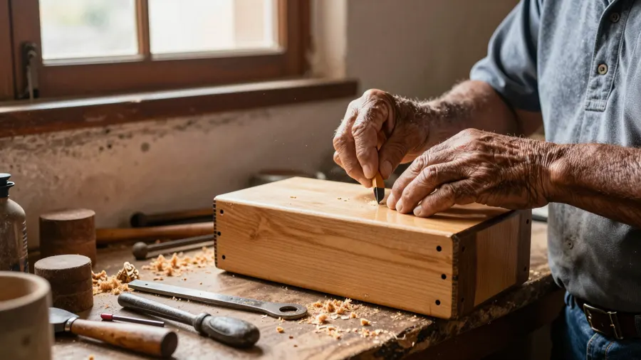
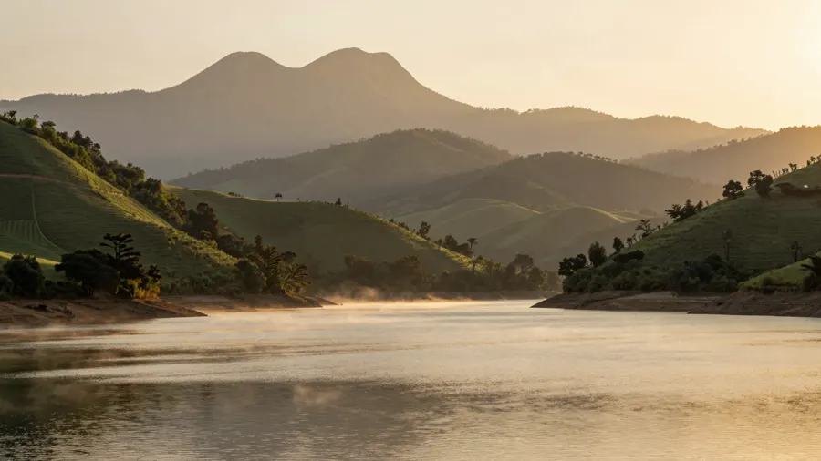
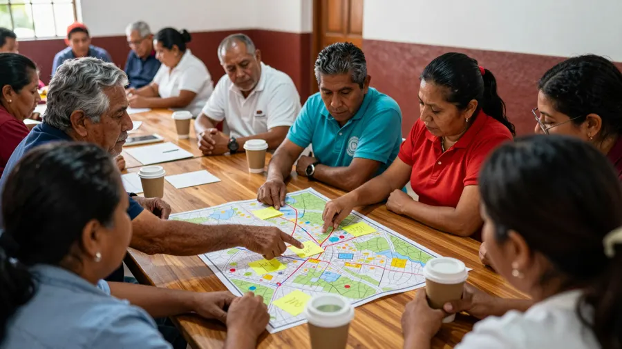

01
Identidad del territorio
Reconocer sus activos, su vocación, sus capacidades y aquello que lo hace único.
Una propuesta de WeSoft para LITT: inventariar los activos de la comunidad, escuchar a sus visitantes con IA y validar todo con las cinco hélices, hasta llegar a una identidad turística fundamentada. Territorio de referencia: Cocula, Jalisco.
Imagen ilustrativa generada con IA
«El primer resultado de la prueba piloto sería contar con una identidad turística territorial fundamentada, construida con los actores locales.»
El Plan Municipal 2025–2027 pide un Plan de Desarrollo Turístico participativo que defina vocaciones territoriales y rutas prioritarias. El piloto de LITT responde justo a eso.
Datos públicos del destino: el punto de partida del piloto.
Año en que Cocula fue nombrado Pueblo Mágico.
El Economista, oct-2025Crecimiento de la afluencia turística tras el nombramiento.
El Economista, oct-2025De Guadalajara por carretera. La mayoría de visitas son de un día.
Visit JaliscoTemplos antiguos que recorren los peregrinos en Las Enramadas.
Visit JaliscoCuna Mundial del Mariachi (patrimonio inmaterial reconocido por la UNESCO), Museo de Sitio «Cocula es el Mariachi», Escuela de Mariachi, «Al Son de Cocula» los domingos, presa Casa Blanca, Cerro de la Cruz, ex haciendas La Sauceda, San Diego y Cofradía de la Luz, birria, «ponte duro» y coyules enmielados.



Imágenes ilustrativas generadas con IA; no corresponden a lugares ni personas reales de Cocula.
Métodos probados de planeación turística participativa, con una capa de datos encima.
Fichas de atractivos, oficios, gastronomía, fiestas y paisaje, levantadas en recorridos y talleres.
Datos: precarga + ficha que la comunidad corrigeQué dicen, qué valoran y qué echan de menos quienes ya visitan el territorio.
IA: reseñas y redes por sentimiento y temaLos actores validan, priorizan y definen la vocación del territorio.
Datos: tablero compartido para decidirEl documento de identidad turística territorial y el mapa de su cadena de valor.
IA: asistente con el conocimiento validadoInspirado en la guía de planeación turística local de MINCETUR y en inventarios participativos validados por residentes.
La quíntuple hélice suma el medio ambiente: la sostenibilidad se vuelve motor de innovación, no una restricción.
Investigación, método y estudiantes en campo.
Plan municipal, reglas, infraestructura y promoción.
Birrierías, hoteles y artesanos: la cadena de valor.
Mariachis, cofradías, tradición y memoria.
Presa Casa Blanca, la sierra y el Cerro de la Cruz.
La información turística es pública y debe estar disponible en cualquier momento para visitantes y actores.
Cada territorio tiene su propio espacio de conocimiento y no se mezcla con otros. La comunidad o LITT son los dueños de sus datos.
Encuestas o padrones de artesanos pueden quedarse en un equipo de la comunidad o de la institución que lo requiera.
LITT conduce la metodología territorial, la relación con los actores y el financiamiento. WeSoft construye y opera la plataforma, el análisis de datos y la IA.
El modelo queda listo para replicarse en otras comunidades, cada una con su propia identidad.
30 minutos para definir el alcance del piloto.
Roles, propiedad de los datos y qué pasa si funciona.
Un inventario semilla de Cocula.
Toca la carpeta para abrirla.